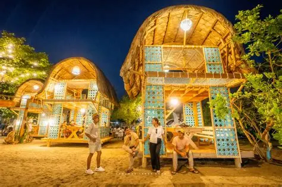
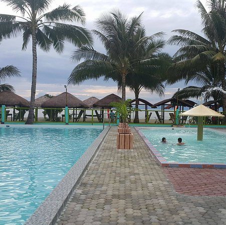
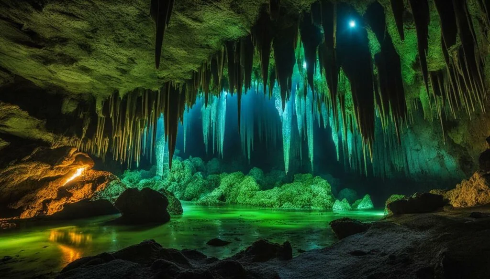

Located along the sun-kissed shores of Malapatan, Sarangani Province, Tariza Beach Club is a celebration of both nature and culture, merging the vibrant spirit of Filipino hospitality with a touch of Spanish architectural charm. This tropical escape fuses modern design with the natural beauty of its surroundings, creating a space where guests can bask in the serenity of the coast while enjoying the lively energy of the locale.

You will rarely find me on beaches. That is because I prefer the mountains. But occasionally, I go to beaches, mostly because of an invitation. That’s exactly what happened when one of my blogger friends, Philip, invited me to visit their beach resort in Malapatan, Sarangani. Pinobre Beach Resort is one of the destinations we visited during our #GenSanventure project.

Located along the sun-kissed shores of Malapatan, Sarangani Province, Tariza Beach Club is a celebration of both nature and culture, merging the vibrant spirit of Filipino hospitality with a touch of Spanish architectural charm. This tropical escape fuses modern design with the natural beauty of its surroundings, creating a space where guests can bask in the serenity of the coast while enjoying the lively energy of the locale.
add
add
add
Your guide to beaches, resorts, and nature spots